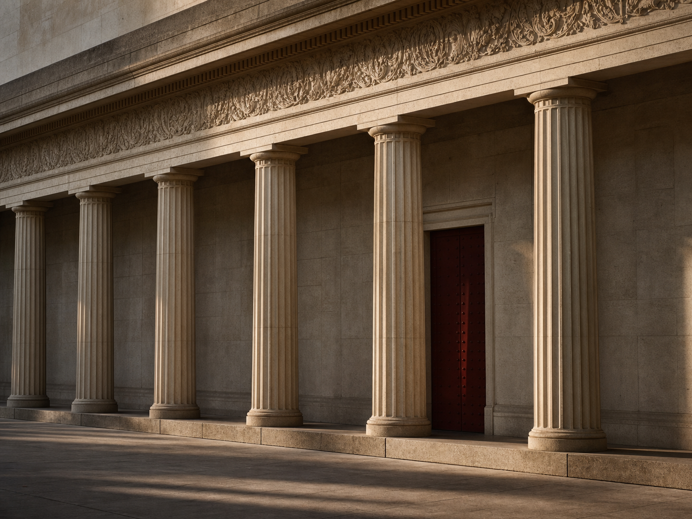
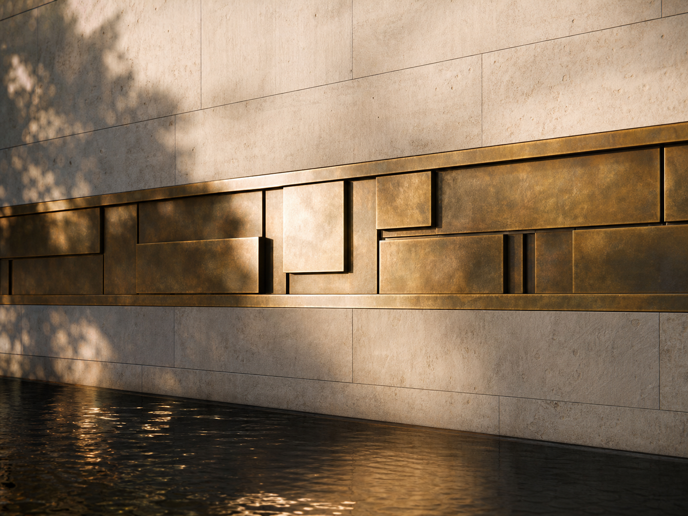
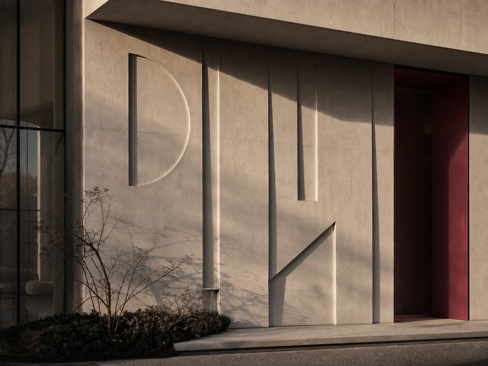
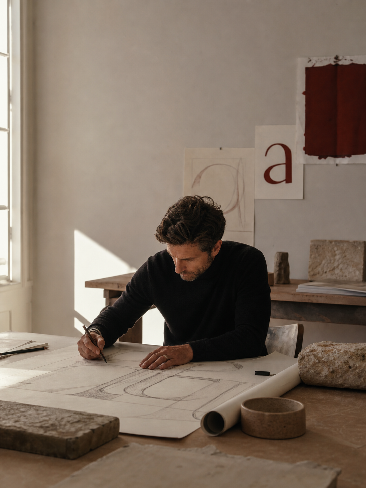

Architectural lettering atelierSet to measure
Set to every single margin
We cut monumental type to the exact width of a façade. As you scroll, the measure narrows and widens; tracking and word-spacing recompose in real time so every line stays flush to both edges.
The atelier
A wall is a measure. We set a single line of type to its exact width, then cut it in stone so the letters carry the building’s own proportions for a century.
Lettering, drawn to widthStone, brass, cast bronze
Tightest measure
Letters Near Touching
The engine, working
Hold this column at the edge of your eye as you scroll. The measure tightens and the words draw together; it opens and they breathe apart. The line never breaks its margins; it only re-wraps, re-spaces, and re-justifies, frame by frame, the way a setter once nudged metal sorts until both edges ran true.
Measure 100 ch Word-space 100 % Lines flush both edges
The typographic spec
Every number the engine watches
Walls we have set
Each title justified to its own column

Grand Concourse Frieze
Limestone, hand-cutCentral district · 2021

Riverside Stone Ledger
Cast brass, flush setHarbour quarter · 2022

Atelier North Façade
Bronze, patinatedFoundry row · 2023
Harbour Customs House
Limestone, restoredOld port · 2024
In the studio
Here the measure relaxes, and type returns to its reading pace.
We are draughtsmen first. Before a letter is cut we draw the wall at full size, then set a single line to its width and watch it justify; testing whether the face can hold both margins under wind, shadow, and a hundred years of weather.
What leaves the atelier is never a typeface. It is one line, set to one wall, flush to its every margin; a building learning to say its own name in its own proportions.
